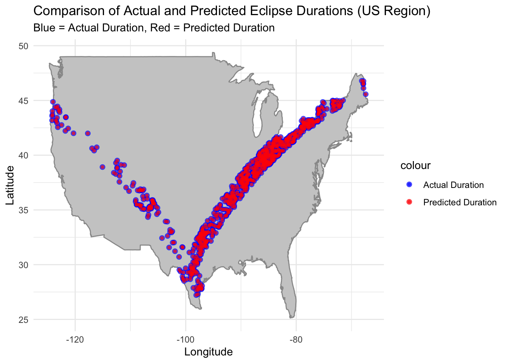

# Load required libraries
library(tidytuesdayR)
library(tidyverse)
library(jsonlite)
library(janitor)
library(here)
library(fs)Tidy Tuesday Exercise
Exercise 13
Setup and Cleaning
First, the required libraries were loaded.
Then the data was loaded in and seperated.
# Load data (code from tinytuesday github)
tuesdata <- tidytuesdayR::tt_load('2024-04-09')
Downloading file 1 of 4: `eclipse_annular_2023.csv`
Downloading file 2 of 4: `eclipse_total_2024.csv`
Downloading file 3 of 4: `eclipse_partial_2023.csv`
Downloading file 4 of 4: `eclipse_partial_2024.csv`# Seperate data (code from tinytuesday github)
eclipse_annular_2023 <- tuesdata$eclipse_annular_2023
eclipse_total_2024 <- tuesdata$eclipse_total_2024
eclipse_partial_2023 <- tuesdata$eclipse_partial_2023
eclipse_partial_2024 <- tuesdata$eclipse_partial_2024
The code was then cleaned using the cleaning script provided with the data.
# Initial cleaning script (code from tinytuesday github)
working_dir <- here::here("tidytuesday-exercise", "eclipse-data")
eclipse_cities_url_2024 <- "https://svs.gsfc.nasa.gov/vis/a000000/a005000/a005073/cities-eclipse-2024.json"
eclipse_cities_url_2023 <- "https://svs.gsfc.nasa.gov/vis/a000000/a005000/a005073/cities-eclipse-2023.json"
eclipse_cities_2024 <- jsonlite::fromJSON(eclipse_cities_url_2024) |>
tibble::as_tibble() |>
janitor::clean_names() |>
tidyr::unnest_wider(eclipse, names_sep = "_")
eclipse_total_2024 <- eclipse_cities_2024 |>
dplyr::filter(!is.na(eclipse_6))
eclipse_partial_2024 <- eclipse_cities_2024 |>
dplyr::filter(is.na(eclipse_6)) |>
dplyr::select(-eclipse_6)
eclipse_cities_2023 <- jsonlite::fromJSON(eclipse_cities_url_2023) |>
tibble::as_tibble() |>
janitor::clean_names() |>
tidyr::unnest_wider(eclipse, names_sep = "_")
eclipse_annular_2023 <- eclipse_cities_2023 |>
dplyr::filter(!is.na(eclipse_6))
eclipse_partial_2023 <- eclipse_cities_2023 |>
dplyr::filter(is.na(eclipse_6)) |>
dplyr::select(-eclipse_6)
readr::write_csv(
eclipse_total_2024,
fs::path(working_dir, "eclipse_total_2024.csv")
)
readr::write_csv(
eclipse_partial_2024,
fs::path(working_dir, "eclipse_partial_2024.csv")
)
readr::write_csv(
eclipse_annular_2023,
fs::path(working_dir, "eclipse_annular_2023.csv")
)
readr::write_csv(
eclipse_partial_2023,
fs::path(working_dir, "eclipse_partial_2023.csv")
)
Exploratory Data Analysis
First, the required libraries were loaded.
# Load required libraries
library(patchwork)
library(cowplot)
library(ggplot2)
library(maps)
Print summary statistics and counts of observation by state.
# Print summary statistics
summary(eclipse_total_2024) state name lat lon
Length:3330 Length:3330 Min. :28.45 Min. :-101.16
Class :character Class :character 1st Qu.:35.42 1st Qu.: -92.41
Mode :character Mode :character Median :39.24 Median : -86.56
Mean :38.33 Mean : -86.93
3rd Qu.:41.22 3rd Qu.: -82.31
Max. :46.91 Max. : -67.43
eclipse_1 eclipse_2 eclipse_3 eclipse_4
Length:3330 Length:3330 Length:3330 Length:3330
Class :character Class :character Class :character Class :character
Mode :character Mode :character Mode :character Mode :character
eclipse_5 eclipse_6
Length:3330 Length:3330
Class :character Class :character
Mode :character Mode :character
summary(eclipse_partial_2024) state name lat lon
Length:28844 Length:28844 Min. :17.96 Min. :-176.60
Class :character Class :character 1st Qu.:35.24 1st Qu.: -99.08
Mode :character Mode :character Median :39.52 Median : -90.30
Mean :38.76 Mean : -93.00
3rd Qu.:42.04 3rd Qu.: -81.16
Max. :71.25 Max. : 174.11
eclipse_1 eclipse_2 eclipse_3 eclipse_4
Length:28844 Length:28844 Length:28844 Length:28844
Class :character Class :character Class :character Class :character
Mode :character Mode :character Mode :character Mode :character
eclipse_5
Length:28844
Class :character
Mode :character
summary(eclipse_annular_2023) state name lat lon
Length:811 Length:811 Min. :27.22 Min. :-124.45
Class :character Class :character 1st Qu.:31.30 1st Qu.:-111.98
Mode :character Mode :character Median :35.42 Median :-106.70
Mean :35.41 Mean :-108.05
3rd Qu.:38.42 3rd Qu.:-101.36
Max. :44.87 Max. : -96.72
eclipse_1 eclipse_2 eclipse_3 eclipse_4
Length:811 Length:811 Length:811 Length:811
Class :character Class :character Class :character Class :character
Mode :character Mode :character Mode :character Mode :character
eclipse_5 eclipse_6
Length:811 Length:811
Class :character Class :character
Mode :character Mode :character
summary(eclipse_partial_2023) state name lat lon
Length:31363 Length:31363 Min. :17.96 Min. :-176.60
Class :character Class :character 1st Qu.:35.36 1st Qu.: -97.50
Mode :character Mode :character Median :39.56 Median : -89.26
Mean :38.80 Mean : -91.97
3rd Qu.:41.93 3rd Qu.: -81.14
Max. :71.25 Max. : 174.11
eclipse_1 eclipse_2 eclipse_3 eclipse_4
Length:31363 Length:31363 Length:31363 Length:31363
Class :character Class :character Class :character Class :character
Mode :character Mode :character Mode :character Mode :character
eclipse_5
Length:31363
Class :character
Mode :character
# Count of observations by state
eclipse_total_2024 %>% count(state) %>% arrange(desc(n))# A tibble: 14 × 2
state n
<chr> <int>
1 OH 693
2 TX 591
3 IN 586
4 NY 403
5 AR 365
6 IL 252
7 MO 168
8 VT 87
9 PA 71
10 OK 41
11 KY 38
12 ME 28
13 NH 4
14 MI 3eclipse_partial_2024 %>% count(state) %>% arrange(desc(n))# A tibble: 52 × 2
state n
<chr> <int>
1 PA 1817
2 CA 1611
3 TX 1268
4 IL 1210
5 IA 1025
6 FL 955
7 MN 914
8 MO 914
9 NY 889
10 WI 807
# ℹ 42 more rows
Generate map visualizations.
# Load required data
world_map <- map_data("world")
# Map visualization for annular eclipse 2023
plot_annular_2023 <- ggplot() +
geom_polygon(data = world_map, aes(x = long, y = lat, group = group), fill = "gray80", color = "gray60") +
geom_point(data = eclipse_annular_2023, aes(x = lon, y = lat), color = "red") +
labs(title = "Annular Eclipse 2023", size=12) +
theme_minimal() +
theme(plot.title = element_text(hjust = 0.5))
# Map visualization for total eclipse 2024
plot_total_2024 <- ggplot() +
geom_polygon(data = world_map, aes(x = long, y = lat, group = group), fill = "gray80", color = "gray60") +
geom_point(data = eclipse_total_2024, aes(x = lon, y = lat), color = "blue") +
labs(title = "Total Eclipse 2024", size=12) +
theme_minimal() +
theme(plot.title = element_text(hjust = 0.5))
# Map visualization partial eclipse 2023
plot_partial_2023 <- ggplot() +
geom_polygon(data = world_map, aes(x = long, y = lat, group = group), fill = "gray80", color = "gray60") +
geom_point(data = eclipse_partial_2023, aes(x = lon, y = lat), color = "red") +
labs(title = "Partial Eclipse 2023", size=12) +
theme_minimal() +
theme(plot.title = element_text(hjust = 0.5))
# Map visualization for partial eclipse 2024
plot_partial_2024 <- ggplot() +
geom_polygon(data = world_map, aes(x = long, y = lat, group = group), fill = "gray80", color = "gray60") +
geom_point(data = eclipse_partial_2024, aes(x = lon, y = lat), color = "blue") +
labs(title = "Partial Eclipse 2024", size=12) +
theme_minimal() +
theme(plot.title = element_text(hjust = 0.5))
# Combine plots using patchwork
combined_plot <- (plot_annular_2023 +
plot_total_2024 +
plot_partial_2023 +
plot_partial_2024 +
plot_layout(nrow = 2, byrow = TRUE)) +
plot_annotation((title="Eclipse Viewing Locations"),
theme = theme(plot.title = element_text(hjust = 0.5, size = 16)))
# Display the combined plot
combined_plotQuestion
Is it possible to predict the duration of an eclipse at any location based on its geographical position and the eclipse type?
Pre-Processing
Loading required libraries.
# Load required libraries
library(tidymodels)
library(yardstick)
library(xgboost)
library(hardhat)
library(glmnet)
library(ranger)
library(dplyr)
library(dials)
Processing data for modeling and calculating total duration.
# Prepare the data for modeling
eclipse_data <- bind_rows(
mutate(eclipse_annular_2023, eclipse_type = "annular"),
mutate(eclipse_total_2024, eclipse_type = "total")
)
# Function to convert time column to numeric format
convert_to_numeric <- function(x) {
as.numeric(as.POSIXlt(x, format = "%H:%M:%S")$hour * 60 + as.POSIXlt(x, format = "%H:%M:%S")$min)
}
# Loop through eclipse columns to convert to numeric format
for (i in 1:6) {
eclipse_col <- paste0("eclipse_", i)
eclipse_data[[eclipse_col]] <- convert_to_numeric(eclipse_data[[eclipse_col]])
}
# Calculate total duration
eclipse_data$total_duration <- eclipse_data$eclipse_6 - eclipse_data$eclipse_1
Creating a data split and recipie for model fitting.
# Separate the data into features and target variable
features <- eclipse_data %>%
select(lat, lon, eclipse_type)
target <- eclipse_data$total_duration
# Create a data split
set.seed(042) # for reproducibility
data_split <- initial_split(eclipse_data, prop = 0.8)
train_data <- training(data_split)
test_data <- testing(data_split)
# Create a recipe for preprocessing the data
eclipse_recipe <- recipe(total_duration ~ lat + lon + eclipse_type, data = train_data) %>%
step_dummy(all_nominal(), -all_outcomes()) %>%
step_center(all_predictors(), -all_outcomes()) %>%
step_scale(all_predictors(), -all_outcomes())
Model Fitting
Defining model specifications.
# Define model specifications...
# LASSO model
lasso_spec <- linear_reg(penalty = tune(), mixture = 1) %>%
set_engine("glmnet") %>%
set_mode("regression")
# Random forest model
rf_spec <- rand_forest(trees = 300, mtry = tune(), min_n = tune()) %>%
set_engine("ranger", seed = 042) %>%
set_mode("regression")
# Boosted trees model
boost_spec <- boost_tree(trees = tune(), tree_depth = tune(), min_n = tune(), learn_rate = tune()) %>%
set_engine("xgboost") %>%
set_mode("regression")
Creating workflows.
# Bundle the recipe and model specs into workflows...
# LASSO model
lasso_workflow <- workflow() %>%
add_recipe(eclipse_recipe) %>%
add_model(lasso_spec)
# Random forest model
rf_workflow <- workflow() %>%
add_recipe(eclipse_recipe) %>%
add_model(rf_spec)
# Boosted trees model
boost_workflow <- workflow() %>%
add_recipe(eclipse_recipe) %>%
add_model(boost_spec)
Setting up cross-validation.
# Setup for cross-validation
set.seed(042) # for reproducibility
cv_folds <- vfold_cv(train_data, v = 5, repeats = 3)
Fitting the LASSO model.
# -- [4a] LASSO Model ----------
# Set up a grid for the LASSO model
lasso_grid <- tibble(
penalty = c(0.001, 0.01, 0.1, 0.5, 1)
)
# Tune the LASSO model
lasso_tune_results <- tune_grid(
lasso_workflow,
resamples = cv_folds,
grid = lasso_grid
)
# Select the best hyperparameters
best_lasso_params <- select_best(lasso_tune_results, "rmse")
# Update the LASSO specification with the best hyperparameters
lasso_spec_final <- lasso_spec %>%
set_engine("glmnet") %>%
set_mode("regression") %>%
finalize_model(best_lasso_params)
# Fit the final LASSO model
lasso_fit_final <- workflow() %>%
add_recipe(eclipse_recipe) %>%
add_model(lasso_spec_final) %>%
fit(data = train_data)
Fitting the Random Forest model.
# -- [4b] Random Forest Model ----------
# Create a tuning grid
rf_grid <- grid_regular(
mtry(range = c(1, 3)),
min_n(range = c(1, 21)),
levels = 7
)
# Tune the random forest model
rf_tune_results <- tune_grid(
rf_workflow,
resamples = cv_folds,
grid = rf_grid
)
# Extract the best hyperparameters
best_rf_params <- select_best(rf_tune_results, "rmse")
# Update the Random Forest specification with the best hyperparameters
rf_spec_final <- rf_spec %>%
finalize_model(best_rf_params) %>%
set_engine("ranger") %>%
set_mode("regression")
# Fit the final Random Forest model
rf_fit_final <- workflow() %>%
add_recipe(eclipse_recipe) %>%
add_model(rf_spec_final) %>%
fit(data = train_data)
Fitting the Boosted Tree model.
# -- [4c] Boosted Trees Model ----------
# Define the parameters
boost_params <- parameters(
tree_depth(range = c(1, 10)),
learn_rate(range = c(0.01, 0.3)),
trees(c(100, 500)),
min_n(c(5, 20))
)
# Create a Latin Hypercube Sampling grid
boost_grid <- grid_latin_hypercube(
boost_params,
size = 20
)
# Ensure 'cv' is correctly defined; assuming it should be 'cv_folds' used earlier
boost_tune_results <- tune_grid(
boost_workflow,
resamples = cv_folds,
grid = boost_grid
)
# Select the best hyperparameters
best_boost_params <- select_best(boost_tune_results, "rmse")
# Update the Boosted Trees specification with the best hyperparameters
boost_spec_final <- boost_spec %>%
set_engine("xgboost") %>%
set_mode("regression") %>%
finalize_model(best_boost_params)
# Fit the final Boosted Trees model
boost_fit_final <- workflow() %>%
add_recipe(eclipse_recipe) %>%
add_model(boost_spec_final) %>%
fit(data = train_data)
Model Evaluation
Loading required libraries.
# Load required libraries
library(knitr)
Creating model evaluation functions.
# Function to generate predictions ensuring consistent column naming
make_predictions <- function(model_fit, new_data) {
predictions <- predict(model_fit, new_data)
if (!"`.pred`" %in% names(predictions)) {
predictions <- predictions %>%
rename(.pred = .pred) # Ensure this matches the output column name from `predict()`
}
predictions
}
# Function to evaluate model performance
evaluate_model <- function(predictions, actual_data, outcome_var) {
results <- actual_data %>%
select({{outcome_var}}) %>%
bind_cols(predictions) %>%
mutate(.resid = {{outcome_var}} - .pred,
Resid_Sign = ifelse(.resid > 0, "Positive", "Negative"))
metrics_results <- metrics(results, truth = {{outcome_var}}, estimate = .pred)
rmse_results <- rmse(results, truth = {{outcome_var}}, estimate = .pred)
rsq_results <- rsq(results, truth = {{outcome_var}}, estimate = .pred)
# Enhanced plot with colors for positive and negative residuals
residuals_plot <- ggplot(results, aes(x = .pred, y = .resid, color = Resid_Sign)) +
geom_point() +
geom_hline(yintercept = 0, linetype = "dashed", color = "red") +
scale_color_manual(values = c("Positive" = "blue", "Negative" = "red")) +
labs(title = "Residuals vs. Predicted Values", x = "Predicted Values", y = "Residuals",
color = "Residual Sign") +
theme_minimal()
list(
Metrics = metrics_results,
RMSE = rmse_results,
R_Squared = rsq_results,
Residuals_Plot = residuals_plot
)
}
Evaluating models.
# Evaluate models
predictions_lasso <- make_predictions(lasso_fit_final, test_data)
eval_lasso <- evaluate_model(predictions_lasso, test_data, total_duration)
predictions_rf <- make_predictions(rf_fit_final, test_data)
eval_rf <- evaluate_model(predictions_rf, test_data, total_duration)
predictions_boost <- make_predictions(boost_fit_final, test_data)
eval_boost <- evaluate_model(predictions_boost, test_data, total_duration)
Print LASSO model evaluation.
# Print evaluation results for each model
cat("LASSO Model Evaluation:\n")LASSO Model Evaluation:print(eval_lasso$Metrics)# A tibble: 3 × 3
.metric .estimator .estimate
<chr> <chr> <dbl>
1 rmse standard 1.72
2 rsq standard 0.974
3 mae standard 1.35 print(eval_lasso$RMSE)# A tibble: 1 × 3
.metric .estimator .estimate
<chr> <chr> <dbl>
1 rmse standard 1.72print(eval_lasso$R_Squared)# A tibble: 1 × 3
.metric .estimator .estimate
<chr> <chr> <dbl>
1 rsq standard 0.974eval_lasso$Residuals_Plot
Print Random Forest model evaluation.
cat("\nRandom Forest Model Evaluation:\n")
Random Forest Model Evaluation:print(eval_rf$Metrics)# A tibble: 3 × 3
.metric .estimator .estimate
<chr> <chr> <dbl>
1 rmse standard 0.367
2 rsq standard 0.999
3 mae standard 0.237print(eval_rf$RMSE)# A tibble: 1 × 3
.metric .estimator .estimate
<chr> <chr> <dbl>
1 rmse standard 0.367print(eval_rf$R_Squared)# A tibble: 1 × 3
.metric .estimator .estimate
<chr> <chr> <dbl>
1 rsq standard 0.999eval_rf$Residuals_Plot
Print Boosted Tree model evaluation.
cat("\nBoosted Trees Model Evaluation:\n")
Boosted Trees Model Evaluation:print(eval_boost$Metrics)# A tibble: 3 × 3
.metric .estimator .estimate
<chr> <chr> <dbl>
1 rmse standard 0.491
2 rsq standard 0.998
3 mae standard 0.370print(eval_boost$RMSE)# A tibble: 1 × 3
.metric .estimator .estimate
<chr> <chr> <dbl>
1 rmse standard 0.491print(eval_boost$R_Squared)# A tibble: 1 × 3
.metric .estimator .estimate
<chr> <chr> <dbl>
1 rsq standard 0.998eval_boost$Residuals_Plot
Extract RMSE and R-Squared values.
# Extract RMSE and R_Squared from the evaluation lists
rmse_lasso <- eval_lasso$RMSE$.estimate
rsq_lasso <- eval_lasso$R_Squared$.estimate
rmse_rf <- eval_rf$RMSE$.estimate
rsq_rf <- eval_rf$R_Squared$.estimate
rmse_boost <- eval_boost$RMSE$.estimate
rsq_boost <- eval_boost$R_Squared$.estimate
Create summary table.
# Create the summary table
metrics_summary <- tibble(
Model = c("LASSO", "Random Forest", "Boosted Trees"),
RMSE = c(rmse_lasso, rmse_rf, rmse_boost),
R_Squared = c(rsq_lasso, rsq_rf, rsq_boost)
)
# Print a nicely formatted table for Markdown
kable(metrics_summary, caption = "Comparison of Model Performance Metrics")| Model | RMSE | R_Squared |
|---|---|---|
| LASSO | 1.7227196 | 0.9739039 |
| Random Forest | 0.3674444 | 0.9988143 |
| Boosted Trees | 0.4909033 | 0.9978832 |
#### Thoughts… The random forest model is the best choice out of the three. The RF model has the lowest RMSE score indicating a lower error rate, and a high R-squared value indicating that it explains the variation within the data. While it’s residuals graph isn’t perfect and still has some pattern to it, it is the most random of the three further indicating that it is the best choice.
Findings
Printing summary table.
# Print a nicely formatted table of model performance metrics
cat("Model Performance Summary:\n")Model Performance Summary:print(kable(metrics_summary, caption = "Comparison of Model Performance Metrics"))
Table: Comparison of Model Performance Metrics
|Model | RMSE| R_Squared|
|:-------------|---------:|---------:|
|LASSO | 1.7227196| 0.9739039|
|Random Forest | 0.3674444| 0.9988143|
|Boosted Trees | 0.4909033| 0.9978832|
Generating map of predicted eclipse durations (RF model) vs actual eclipse durations.
# Generate predictions using the Random Forest model
predictions <- predict(rf_fit_final, test_data)
test_data$Predicted_Duration = predictions$.pred
# Prepare the data frame for mapping
map_data <- test_data %>%
select(lat, lon, total_duration, Predicted_Duration)
# Basic US map
us_map <- map_data("usa")
# Create the plot with aspect ratio fixed
ggplot() +
geom_polygon(data = us_map, aes(x = long, y = lat, group = group), fill = "gray80", colour = "gray60") +
geom_point(data = map_data, aes(x = lon, y = lat, color = "Actual Duration"), size = 2, alpha = 0.6) +
geom_point(data = map_data, aes(x = lon, y = lat, color = "Predicted Duration"), size = 1, alpha = 0.6) +
scale_color_manual(values = c("Actual Duration" = "blue", "Predicted Duration" = "red")) +
labs(title = "Comparison of Actual and Predicted Eclipse Durations (US Region)",
subtitle = "Blue = Actual Duration, Red = Predicted Duration",
x = "Longitude", y = "Latitude") +
theme_minimal() +
theme(legend.position = "right") 
Conclusion
The Random Forest model demonstrated the lowest RMSE and the highest R-squared among the tested models, indicating its strong predictive power. Based on the map of actual vs predicted eclipse durations, the RF model seems to be able to predict eclipse duration based on geographic location. This indicates that the answer to the initial question “Is it possible to predict the duration of an eclipse at any location based on its geographical position and the eclipse type?” is yes.